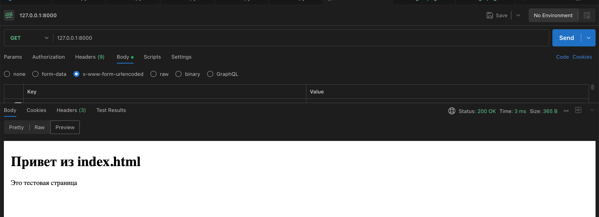
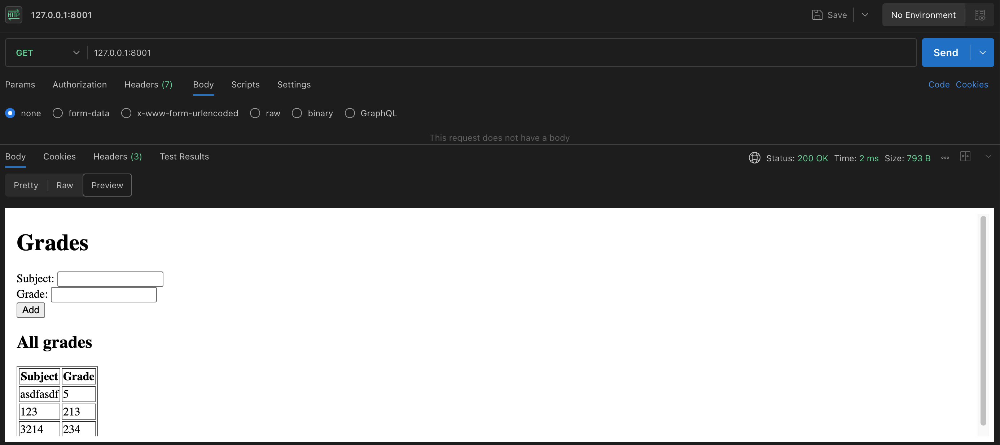
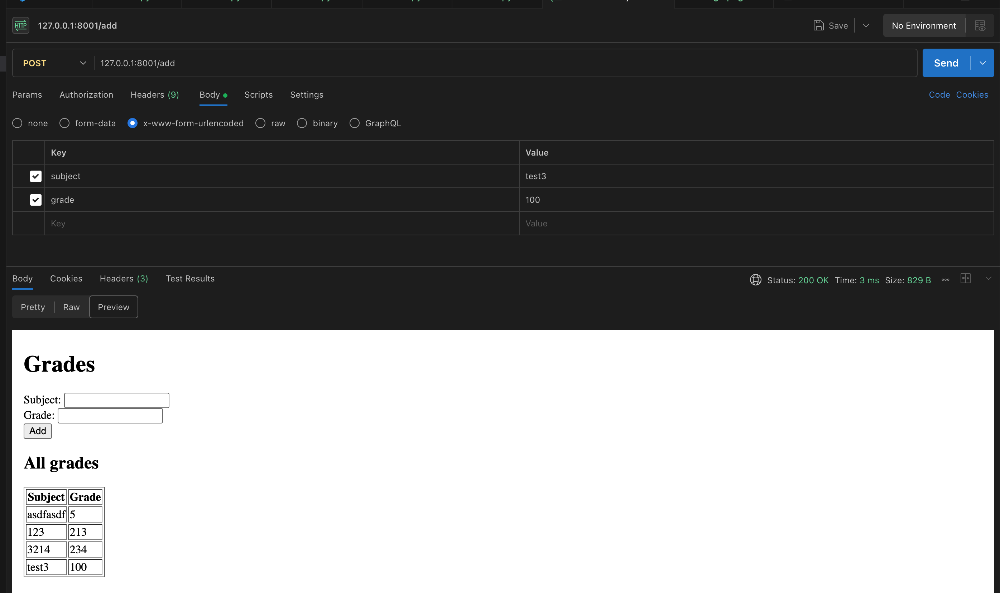

Отчёт по лабораторной работе 1
Задание 1 — task1.py
Код задания:
#!/usr/bin/env python3
"""
Как использовать (в двух терминалах):
Запустить сервер:
python3 task1.py --server
В другом терминале запустить клиент:
python3 task1.py --client
Остальные команды описаны в python task1.py --help
"""
import argparse
import socket
import sys
import time
HOST = '127.0.0.1'
PORT = 9999
def run_server(host: str = HOST, port: int = PORT) -> None:
with socket.socket(socket.AF_INET, socket.SOCK_DGRAM) as sock:
sock.bind((host, port))
print(f"Server listening on {host}:{port}")
try:
data, addr = sock.recvfrom(1024)
print(f"Received from {addr}: {data.decode()}")
reply = "Hello, client"
sock.sendto(reply.encode(), addr)
print(f"Sent reply to {addr}: {reply}")
except KeyboardInterrupt:
print("Server interrupted by user")
def run_client(host: str = HOST, port: int = PORT, timeout: float = 5.0) -> None:
with socket.socket(socket.AF_INET, socket.SOCK_DGRAM) as sock:
sock.settimeout(timeout)
message = "Hello, server"
try:
sock.sendto(message.encode(), (host, port))
print(f"Sent to {host}:{port}: {message}")
data, addr = sock.recvfrom(1024)
print(f"Received from {addr}: {data.decode()}")
except socket.timeout:
print("No response received (timeout)")
except Exception as e:
print(f"Client error: {e}")
def parse_args():
p = argparse.ArgumentParser(description='UDP client/server demo')
group = p.add_mutually_exclusive_group(required=True)
group.add_argument('--server', action='store_true', help='Run as server')
group.add_argument('--client', action='store_true', help='Run as client')
p.add_argument('--host', default=HOST, help='Host to bind/connect (default: 127.0.0.1)')
p.add_argument('--port', type=int, default=PORT, help=f'Port (default: {PORT})')
return p.parse_args()
if __name__ == '__main__':
args = parse_args()
if args.server:
try:
run_server(args.host, args.port)
except Exception as e:
print(f"Server error: {e}")
sys.exit(1)
elif args.client:
try:
# small sleep in case server was just started in another process
time.sleep(0.1)
run_client(args.host, args.port)
except Exception as e:
print(f"Client error: {e}")
sys.exit(1)
Реализация (кратко):
- Простой демонстрационный UDP-сервер и клиент. Сервер слушает один пакет методом recvfrom и отвечает строкой "Hello, client".
- Клиент отправляет один UDP-пакет и ожидает ответ с таймаутом.
Задание 2 — task2.py
Код задания:
#!/usr/bin/env python3
"""
Как использовать (в двух терминалах):
Запустить сервер:
python3 task2.py --server
В другом терминале запустить клиент:
python3 task2.py --client
Остальные команды описаны в python task2.py --help
"""
from __future__ import annotations
import argparse
import math
import socket
from typing import Tuple
HOST = '127.0.0.1'
PORT = 10000
BUFFER_SIZE = 1024
def parse_pair(s: str) -> Tuple[float, float]:
s = s.strip()
if not s:
raise ValueError("empty input")
for sep in (',', None):
try:
parts = s.split(sep) if sep is not None else s.split()
if len(parts) != 2:
continue
a, b = float(parts[0]), float(parts[1])
return a, b
except Exception:
continue
raise ValueError(f"could not parse two numbers from: '{s}'")
def run_server(host: str = HOST, port: int = PORT) -> None:
with socket.socket(socket.AF_INET, socket.SOCK_STREAM) as srv:
srv.setsockopt(socket.SOL_SOCKET, socket.SO_REUSEADDR, 1)
srv.bind((host, port))
srv.listen()
print(f"Server listening on {host}:{port}")
try:
while True:
conn, addr = srv.accept()
with conn:
print(f"Connection from {addr}")
data = b""
try:
data = conn.recv(BUFFER_SIZE)
if not data:
print("No data received, closing connection")
continue
line = data.decode().strip()
print(f"Received: {line}")
try:
a, b = parse_pair(line)
hyp = math.hypot(a, b)
resp = f"{hyp}\n"
except ValueError as e:
resp = f"ERROR: {e}\n"
conn.sendall(resp.encode())
print(f"Sent: {resp.strip()}")
except Exception as e:
print(f"Error handling client {addr}: {e}")
except KeyboardInterrupt:
print("Server interrupted by user, exiting")
def run_client(host: str = HOST, port: int = PORT, timeout: float = 5.0) -> None:
print("Enter two lengths for a right triangle.")
try:
a_str = input("First lengths (a): ").strip()
b_str = input("Second lengths (b): ").strip()
try:
a, b = parse_pair(f"{a_str} {b_str}")
except ValueError:
try:
a, b = parse_pair(a_str)
except ValueError:
raise
except Exception as e:
print(f"Input error: {e}")
return
msg = f"{a} {b}\n"
try:
with socket.create_connection((host, port), timeout=timeout) as s:
s.sendall(msg.encode())
print(f"Sent to {host}:{port}: {a} {b}")
data = s.recv(BUFFER_SIZE)
if not data:
print("No response from server")
return
resp = data.decode().strip()
if resp.startswith("ERROR:"):
print(f"Server error: {resp}")
else:
try:
val = float(resp)
print(f"Hypotenuse: {val}")
except Exception:
print(f"Unexpected server reply: {resp}")
except Exception as e:
print(f"Client error: {e}")
def parse_args():
p = argparse.ArgumentParser(description='TCP client/server for Pythagoras theorem')
group = p.add_mutually_exclusive_group(required=True)
group.add_argument('--server', action='store_true', help='Run as server')
group.add_argument('--client', action='store_true', help='Run as client')
p.add_argument('--host', default=HOST, help=f'Host (default: {HOST})')
p.add_argument('--port', type=int, default=PORT, help=f'Port (default: {PORT})')
p.add_argument('--timeout', type=float, default=5.0, help='Client timeout in seconds')
return p.parse_args()
if __name__ == '__main__':
args = parse_args()
if args.server:
try:
run_server(args.host, args.port)
except Exception as e:
print(f"Server error: {e}")
exit(1)
elif args.client:
try:
run_client(args.host, args.port, timeout=args.timeout)
except Exception as e:
print(f"Client error: {e}")
exit(1)
Реализация (кратко):
- TCP-сервер, принимающий строку с двумя числами (через пробел или запятую), вычисляет гипотенузу (math.hypot) и возвращает результат клиенту.
- Клиент собирает ввод пользователя, отправляет серверу и печатает ответ.
Задание 3 — task3.py и index.html
Код задания (task3.py):
#!/usr/bin/env python3
"""
Simple HTTP server
Использование:
python3 task3.py --host 127.0.0.1 --port 8000
Остальные команды описаны в python task3.py --help
"""
from __future__ import annotations
import argparse
import os
import socket
from typing import Tuple
HOST = '127.0.0.1'
PORT = 8000
BUFFER_SIZE = 4096
def build_http_response(body: bytes, status_code: int = 200, content_type: str = 'text/html; charset=utf-8') -> bytes:
reason = {200: 'OK', 404: 'Not Found', 400: 'Bad Request'}.get(status_code, 'OK')
headers = [
f'HTTP/1.1 {status_code} {reason}',
f'Content-Type: {content_type}',
f'Content-Length: {len(body)}',
'Connection: close',
'\r\n'
]
return '\r\n'.join(headers).encode() + body
def handle_request(conn: socket.socket, addr: Tuple[str, int], root_dir: str) -> None:
try:
data = conn.recv(BUFFER_SIZE)
if not data:
return
text = data.decode(errors='ignore')
first_line = text.splitlines()[0] if text.splitlines() else ''
parts = first_line.split()
if len(parts) < 3:
resp = build_http_response(b'Bad Request', status_code=400, content_type='text/plain')
conn.sendall(resp)
return
method, path, _ = parts
if method != 'GET':
resp = build_http_response(b'Method Not Allowed', status_code=400, content_type='text/plain')
conn.sendall(resp)
return
if path == '/':
path = '/index.html'
# prevent path traversal
safe_path = os.path.normpath(path).lstrip('/')
full_path = os.path.join(root_dir, safe_path)
if not os.path.commonpath([os.path.abspath(full_path), os.path.abspath(root_dir)]) == os.path.abspath(root_dir):
resp = build_http_response(b'Not Found', status_code=404, content_type='text/plain')
conn.sendall(resp)
return
if not os.path.exists(full_path) or not os.path.isfile(full_path):
resp = build_http_response(b'Not Found', status_code=404, content_type='text/plain')
conn.sendall(resp)
return
with open(full_path, 'rb') as f:
body = f.read()
resp = build_http_response(body, status_code=200, content_type='text/html; charset=utf-8')
conn.sendall(resp)
except Exception:
try:
conn.sendall(build_http_response(b'Bad Request', status_code=400, content_type='text/plain'))
except Exception:
pass
def run_server(host: str = HOST, port: int = PORT, root_dir: str | None = None) -> None:
if root_dir is None:
root_dir = os.path.dirname(os.path.abspath(__file__))
with socket.socket(socket.AF_INET, socket.SOCK_STREAM) as srv:
srv.setsockopt(socket.SOL_SOCKET, socket.SO_REUSEADDR, 1)
srv.bind((host, port))
srv.listen(5)
print(f'Serving HTTP on {host}:{port} (root: {root_dir})')
try:
while True:
conn, addr = srv.accept()
with conn:
print(f'Connection from {addr}')
handle_request(conn, addr, root_dir)
except KeyboardInterrupt:
print('\nServer stopped by user')
def parse_args():
p = argparse.ArgumentParser(description='Minimal HTTP server serving index.html using sockets')
p.add_argument('--host', default=HOST, help=f'Host to bind (default: {HOST})')
p.add_argument('--port', type=int, default=PORT, help=f'Port (default: {PORT})')
p.add_argument('--root', default=None, help='Directory to serve files from (default: script directory)')
return p.parse_args()
if __name__ == '__main__':
args = parse_args()
run_server(args.host, args.port, root_dir=args.root)
Файл index.html использован как статическая страница при обращении к /:
<!doctype html>
<html lang="ru">
<head>
<meta charset="utf-8" />
<title>Лабораторная работа 1 — Задание 3</title>
</head>
<body>
<h1>Привет из index.html</h1>
<p>Это тестовая страница</p>
</body>
</html>
Реализация (кратко):
- Минимальный HTTP-сервер на сокетах. Обрабатывает простые GET-запросы, защищает от обхода пути (path traversal) и отдает
index.html.
Задание 4 — task4.py
Код задания:
#!/usr/bin/env python3
"""
Multi-user chat supporting TCP and UDP
Использование
TCP server: python3 task4.py --mode server --host 127.0.0.1 --port 12000
TCP client: python3 task4.py --mode client --host 127.0.0.1 --port 12000 --name Alice
Остальные команды описаны в python3 task4.py --help
"""
from __future__ import annotations
import argparse
import socket
import threading
from typing import Dict, Tuple
BUFFER_SIZE = 4096
def tcp_server(host: str, port: int) -> None:
clients: Dict[threading.Thread, socket.socket] = {}
clients_lock = threading.Lock()
srv = socket.socket(socket.AF_INET, socket.SOCK_STREAM)
srv.setsockopt(socket.SOL_SOCKET, socket.SO_REUSEADDR, 1)
srv.bind((host, port))
srv.listen()
print(f"TCP server listening on {host}:{port}")
def broadcast(message: bytes, exclude: socket.socket | None = None) -> None:
with clients_lock:
for sock in list(clients.values()):
try:
if sock is exclude:
continue
sock.sendall(message)
except Exception:
pass
def handle_client(conn: socket.socket, addr: Tuple[str, int]) -> None:
print(f"Client connected: {addr}")
try:
while True:
data = conn.recv(BUFFER_SIZE)
if not data:
break
# broadcast received message to other clients
broadcast(data, exclude=conn)
except Exception as e:
print(f"Error with client {addr}: {e}")
finally:
with clients_lock:
# remove this connection from clients
for t, s in list(clients.items()):
if s is conn:
del clients[t]
break
try:
conn.close()
except Exception:
pass
print(f"Client disconnected: {addr}")
try:
while True:
conn, addr = srv.accept()
t = threading.Thread(target=handle_client, args=(conn, addr), daemon=True)
with clients_lock:
clients[t] = conn
t.start()
except KeyboardInterrupt:
print("\nTCP server stopped")
finally:
srv.close()
def tcp_client(host: str, port: int, name: str | None = None) -> None:
if not name:
name = 'Anonymous'
def recv_loop(sock: socket.socket) -> None:
try:
while True:
data = sock.recv(BUFFER_SIZE)
if not data:
print('Disconnected from server')
break
print(data.decode(errors='ignore'))
except Exception:
pass
try:
with socket.create_connection((host, port)) as s:
print(f"Connected to TCP server at {host}:{port}")
rthread = threading.Thread(target=recv_loop, args=(s,), daemon=True)
rthread.start()
# send loop
while True:
line = input()
if not line:
continue
if line.strip().lower() == '/quit':
break
msg = f"{name}: {line}\n".encode()
try:
s.sendall(msg)
except Exception:
print('Failed to send, exiting')
break
except KeyboardInterrupt:
print('\nClient stopped')
except Exception as e:
print(f"Client error: {e}")
def parse_args():
p = argparse.ArgumentParser(description='Multi-user chat (TCP/UDP) using sockets and threading')
p.add_argument('--mode', choices=['server', 'client'], required=True, help='Run as server or client')
p.add_argument('--host', default='127.0.0.1', help='Host to bind/connect (default: 127.0.0.1')
p.add_argument('--port', type=int, required=True, help='Port to bind/connect')
p.add_argument('--name', help='Client name (for clients)')
return p.parse_args()
def main() -> None:
args = parse_args()
if args.mode == 'server':
tcp_server(args.host, args.port)
elif args.mode == 'client':
tcp_client(args.host, args.port, name=args.name)
if __name__ == '__main__':
main()
Реализация (кратко):
- TCP-мультиклиентный чат на сокетах и потоках. Сервер принимает подключения и пересылает сообщения всем остальным клиентам. Клиент запускает поток для приёма сообщений и основной цикл для отправки.
Задание 5 — task5.py
Код задания:
#!/usr/bin/env python3
"""
Minimal HTTP server supporting GET and POST using sockets.
Usage:
python3 task5.py --host 127.0.0.1 --port 8001
The server keeps grades in memory. POST to /add with form fields
`subject` and `grade` to add a record. GET / returns an HTML page
with a form and the list of stored grades.
"""
from __future__ import annotations
import argparse
import socket
import urllib.parse
from typing import Tuple
HOST = '127.0.0.1'
PORT = 8001
BUFFER_SIZE = 8192
# in-memory storage: list of (subject, grade)
grades: list[tuple[str, str]] = []
def build_http_response(body: bytes, status_code: int = 200, content_type: str = 'text/html; charset=utf-8') -> bytes:
reason = {200: 'OK', 404: 'Not Found', 400: 'Bad Request', 405: 'Method Not Allowed'}.get(status_code, 'OK')
headers = [
f'HTTP/1.1 {status_code} {reason}',
f'Content-Type: {content_type}',
f'Content-Length: {len(body)}',
'Connection: close',
'\r\n'
]
return '\r\n'.join(headers).encode('utf-8') + body
def render_index_page() -> bytes:
rows = '\n'.join(f"<tr><td>{s}</td><td>{g}</td></tr>" for s, g in grades)
html = f"""
<!doctype html>
<html>
<head><meta charset="utf-8"><title>Grades</title></head>
<body>
<h1>Grades</h1>
<form method="post" action="/add">
<label>Subject: <input name="subject" required></label><br>
<label>Grade: <input name="grade" required></label><br>
<button type="submit">Add</button>
</form>
<h2>All grades</h2>
<table border="1">
<thead><tr><th>Subject</th><th>Grade</th></tr></thead>
<tbody>
{rows}
</tbody>
</table>
</body>
</html>
"""
return html.encode('utf-8')
def parse_headers_and_body(data: bytes) -> tuple[str, dict[str, str], bytes]:
# returns request_line(str), headers(dict), body(bytes)
text = data.decode('utf-8', errors='ignore')
parts = text.split('\r\n\r\n', 1)
head = parts[0]
body = parts[1].encode('utf-8') if len(parts) > 1 else b''
lines = head.split('\r\n')
request_line = lines[0] if lines else ''
headers: dict[str, str] = {}
for line in lines[1:]:
if ':' in line:
k, v = line.split(':', 1)
headers[k.strip().lower()] = v.strip()
return request_line, headers, body
def handle_request(conn: socket.socket, addr: Tuple[str, int]) -> None:
try:
data = conn.recv(BUFFER_SIZE)
if not data:
return
request_line, headers, body = parse_headers_and_body(data)
parts = request_line.split()
if len(parts) < 3:
conn.sendall(build_http_response(b'Bad Request', status_code=400, content_type='text/plain'))
return
method, path, _ = parts
if method == 'GET':
if path == '/' or path.startswith('/'):
resp = render_index_page()
conn.sendall(build_http_response(resp, status_code=200, content_type='text/html; charset=utf-8'))
return
else:
conn.sendall(build_http_response(b'Not Found', status_code=404, content_type='text/plain'))
return
if method == 'POST':
# expect POST /add
if path != '/add':
conn.sendall(build_http_response(b'Not Found', status_code=404, content_type='text/plain'))
return
content_type = headers.get('content-type', '')
content_length = int(headers.get('content-length', '0') or '0')
# If body length may be larger than initial recv, try to read remaining
received_len = len(body)
while received_len < content_length:
more = conn.recv(BUFFER_SIZE)
if not more:
break
body += more
received_len = len(body)
# parse form data (application/x-www-form-urlencoded)
if 'application/x-www-form-urlencoded' in content_type:
decoded = body.decode('utf-8', errors='ignore')
params = urllib.parse.parse_qs(decoded)
subject = params.get('subject', [''])[0].strip()
grade = params.get('grade', [''])[0].strip()
print(f"Adding grade: subject={subject}, grade={grade}")
if subject and grade:
grades.append((subject, grade))
# after adding, redirect back to /
location_body = b''
headers_resp = [
'HTTP/1.1 303 See Other',
'Location: /',
'Content-Length: 0',
'Connection: close',
'\r\n'
]
conn.sendall('\r\n'.join(headers_resp).encode('utf-8'))
return
else:
conn.sendall(build_http_response(b'Bad Request', status_code=400, content_type='text/plain'))
return
else:
conn.sendall(build_http_response(b'Unsupported Media Type', status_code=400, content_type='text/plain'))
return
# other methods
conn.sendall(build_http_response(b'Method Not Allowed', status_code=405, content_type='text/plain'))
except Exception as e:
try:
print(f"Error handling request from {e}.")
conn.sendall(build_http_response(b'Internal Server Error', status_code=400, content_type='text/plain'))
except Exception:
pass
def run_server(host: str = HOST, port: int = PORT) -> None:
with socket.socket(socket.AF_INET, socket.SOCK_STREAM) as srv:
srv.setsockopt(socket.SOL_SOCKET, socket.SO_REUSEADDR, 1)
srv.bind((host, port))
srv.listen(5)
print(f'Serving on http://{host}:{port}/ (in-memory storage)')
try:
while True:
conn, addr = srv.accept()
with conn:
print(f'Connection from {addr}')
handle_request(conn, addr)
except KeyboardInterrupt:
print('\nServer stopped')
def parse_args():
p = argparse.ArgumentParser(description='Minimal HTTP server supporting GET and POST (in-memory grades)')
p.add_argument('--host', default=HOST)
p.add_argument('--port', type=int, default=PORT)
return p.parse_args()
if __name__ == '__main__':
args = parse_args()
run_server(args.host, args.port)
Реализация (кратко):
- Минимальный HTTP-сервер, обрабатывающий GET / (возвращает HTML форму и таблицу оценок) и POST /add (принимает form-urlencoded данные и добавляет в in-memory список
grades).

Вывод
Выполнены все пять заданий лабораторной работы. Кратко:
- Задания 1 и 2 реализуют сетевые демонстрации: UDP-сервер/клиент и TCP-сервер/клиент для вычисления гипотенузы. Скрипты запускаются локально с параметрами --server/--client и корректно обмениваются сообщениями.
- Задание 3 — минимальный HTTP-сервер, отдающий статический
index.htmlи защищающийся от path traversal. - Задание 4 — мультиклиентный TCP-чат с потоками: сервер ретранслирует полученные сообщения другим клиентам, клиент имеет поток приёма и цикл отправки.
- Задание 5 — HTTP-сервер с поддержкой GET и POST: хранит оценки в памяти, принимает form-urlencoded POST на
/addи показывает таблицу оценок на/.